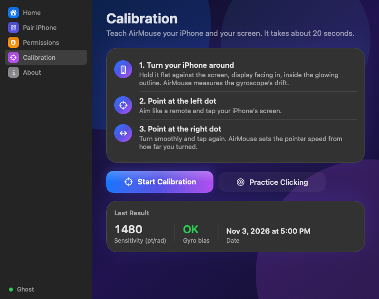
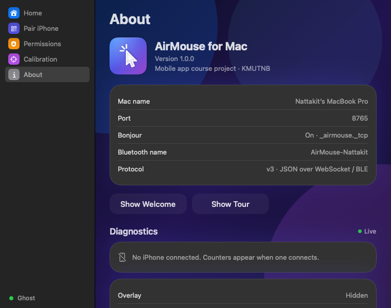
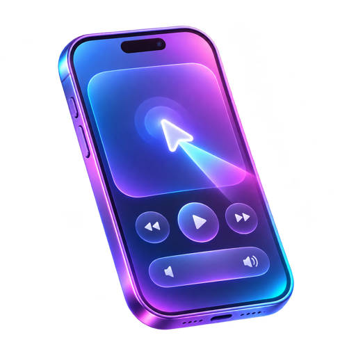

Install on Mac
Download the DMG and drag AirMouse into Applications.
Three steps from download to pointing.
Download the DMG and drag AirMouse into Applications.
Scan the QR code, or connect over Wi-Fi or Bluetooth.
Aim at five points on screen, then move your cursor in the air.

Everything you need, nothing you do not.
Connect the way that suits the room.
Aim at five targets so the pointer lands where you point.
Type on your Mac straight from the phone.
A built-in playground to get your aim steady.
High-rate sensor fusion for fluid motion.
Local network only. No account, no cloud.
AirMouse is not notarized yet, so macOS asks for one extra click the first time.
Double-click AirMouse.dmg to mount it.
Drop AirMouse onto the Applications folder, then eject the disk image.
Right-click AirMouse in Applications and choose Open, then confirm. Or open System Settings → Privacy & Security and click Open Anyway.
Allow AirMouse under Privacy & Security → Accessibility so it can move the cursor and type.

macOS only lets approved apps move the pointer and send key presses. Without it, AirMouse cannot control your Mac.
Your iPhone talks to your Mac directly over your local network. macOS asks permission before an app can do that.
Bluetooth is the alternative link when Wi-Fi is unavailable. It is only used to talk to your own iPhone.
The connection never leaves your home network. Both devices must be on the same network to find each other.

Coming to the App Store. For now the iPhone app is installed by the developer.